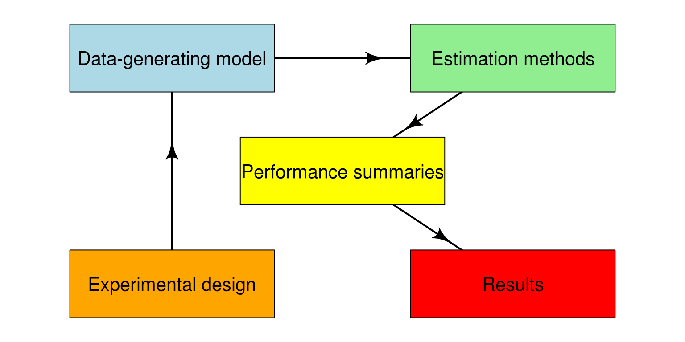
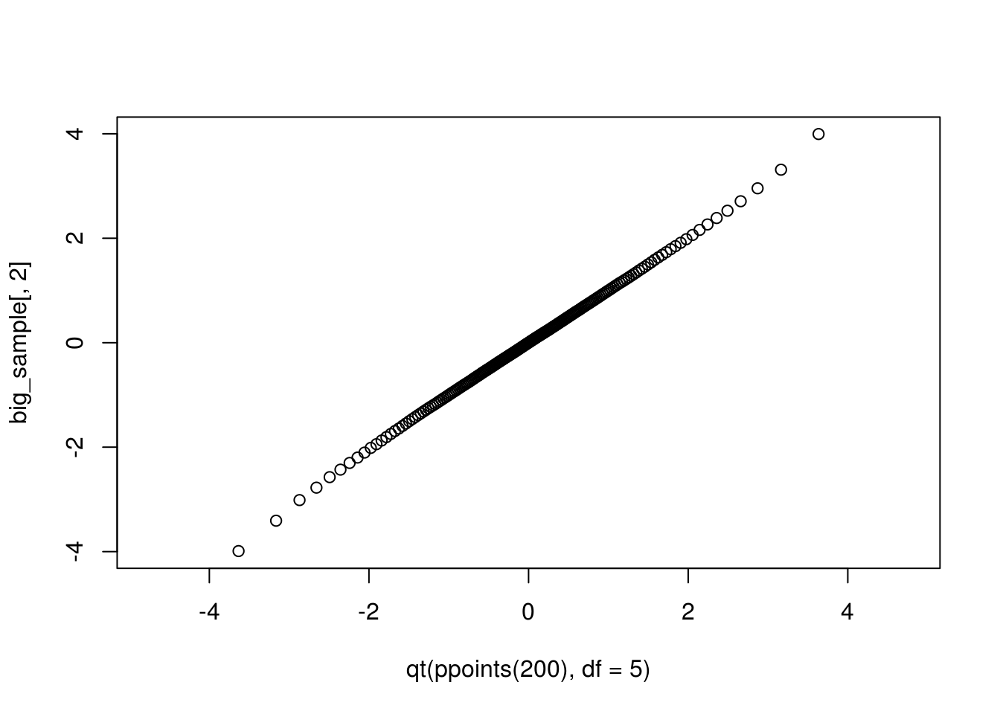

Chapter 7 Putting the pieces together
Earlier, I suggested that we can think of simulation studies as having five main components:

I also proposed that the code we write to implement simulations should follow the same structure, with different functions corresponding to each component. So far, we’ve looked at the middle three components:
- data-generating model
- estimation methods
- performance criteria
In these notes, we’ll start to fill out the remainder, by looking at the overall organization of code for a simulation study. We’ll use as a running example the simulation of Cronbach’s \(\alpha\) coefficient, which we saw in Class 17.
7.1 Organizing the script for a simulation study
In my methodological work, I try to always follow the same workflow when writing simulations. I make no claim that this is the only or best way to do things—only that it works for me. You see my template by doing the following:
Run the following code to install my personal package of helper functions:
library(devtools) install_github("jepusto/Pusto")Load the
Pustolibrary and run theSimulation_Skeleton()function as follows:library(Pusto) Simulation_Skeleton("Cronbach Alpha simulation")
This function will open up a new R script for you, called "Cronbach Alpha simulation.R", which contains a template for a simulation study, with sections corresponding to each component.
7.2 data-generating model
The first two sections are about the data-generating model:
rm(list = ls())
#------------------------------------------------------
# Set development values for simulation parameters
#------------------------------------------------------
# What are your model parameters?
# What are your design parameters?
#------------------------------------------------------
# Data Generating Model
#------------------------------------------------------
dgm <- function(model_params) {
return(dat)
}
# Test the data-generating model - How can you verify that it is correct?Here, we need to create and test a function that takes model parameters (and sample sizes and such) as inputs, and produces a simulated dataset. For the Cronbach alpha simulation, the function looks like this:
library(mvtnorm)
rm(list = ls())
#------------------------------------------------------
# Set development values for simulation parameters
#------------------------------------------------------
# model parameters
alpha <- 0.73 # true alpha
df <- 12 # degrees of freedom
# design parameters
n <- 50 # sample size
p <- 6 # number of items
#------------------------------------------------------
# Data Generating Model
#------------------------------------------------------
r_mvt_items <- function(n, p, alpha, df) {
icc <- alpha / (p - alpha * (p - 1))
V_mat <- icc + diag(1 - icc, nrow = p)
X <- rmvt(n = n, sigma = V_mat, df = df)
colnames(X) <- LETTERS[1:p]
X
}
# Test the data-generating model
big_sample <- r_mvt_items(n = 100000, p = 4, alpha = 0.73, df = 5)
round(cor(big_sample), 3) # looks good## A B C D
## A 1.000 0.402 0.411 0.399
## B 0.402 1.000 0.402 0.407
## C 0.411 0.402 1.000 0.397
## D 0.399 0.407 0.397 1.000qqplot(qt(ppoints(200), df = 5), big_sample[,2], ylim = c(-4,4))
7.3 estimation procedures
The next section of the template looks like this:
#------------------------------------------------------
# Model-fitting/estimation/testing functions
#------------------------------------------------------
estimate <- function(dat, design_params) {
return(result)
}
# Test the estimation functionHere, we need to create a function that takes simulated data as input (and possibly also design parameters, like sample size), and produces a set of estimates (or confidence intervals, or p-values, etc.). As usual, we should also test that the function is correct.
Here’s what this code looks like for the Cronbach alpha simulation:
#------------------------------------------------------
# Model-fitting/estimation/testing functions
#------------------------------------------------------
estimate_alpha <- function(dat, coverage = .95) {
V <- cov(dat)
p <- ncol(dat)
n <- nrow(dat)
A <- p / (p - 1) * (1 - sum(diag(V)) / sum(V))
Var_A <- 2 * p * (1 - A)^2 / ((p - 1) * n)
B <- log(1 - A) / 2
SE_B <- sqrt(p / (2 * n * (p - 1)))
z <- qnorm((1 - coverage) / 2)
CI_B <- B + c(-1, 1) * SE_B * z
CI_A <- 1 - exp(2 * CI_B)
data.frame(A = A, Var_A = Var_A, CI_L = CI_A[1], CI_U = CI_A[2])
}
# Test the estimation function
small_sample <- r_mvt_items(n = 50, p = 6, alpha = 0.73, df = 5)
estimate_alpha(small_sample)## A Var_A CI_L CI_U
## 1 0.6322428 0.006491778 0.4349978 0.7606286The function takes a simulated dataset as input and spits out a point estimate of alpha, an estimate of the variance of alpha, and a confidence interval for alpha (at the 95% coverage level, by default).
We’ve already seen how to use the replicate function to generate a whole bunch of simulated estimates:
alpha_sims <-
replicate(n = 10, {
dat <- r_mvt_items(n = 50, p = 6, alpha = 0.73, df = 5)
estimate_alpha(dat)
}, simplify = FALSE) %>%
bind_rows()
alpha_sims## A Var_A CI_L CI_U
## 1 0.7841786 0.002235786 0.6684237 0.8595229
## 2 0.6318808 0.006504564 0.4344417 0.7603930
## 3 0.7156552 0.003880895 0.5631481 0.8149213
## 4 0.7436121 0.003155269 0.6060995 0.8331183
## 5 0.7138774 0.003929575 0.5604168 0.8137642
## 6 0.7666345 0.002614053 0.6414700 0.8481035
## 7 0.8464022 0.001132430 0.7640207 0.9000239
## 8 0.7614484 0.002731529 0.6335023 0.8447279
## 9 0.6262690 0.006704395 0.4258200 0.7567402
## 10 0.7805177 0.002312279 0.6627993 0.85714007.4 Performance calculations
The next section of the template deals with performance calculations:
#------------------------------------------------------
# Calculate performance measures
# (For some simulations, it may make more sense
# to do this as part of the simulation driver.)
#------------------------------------------------------
performance <- function(results, model_params) {
return(performance_measures)
}
# Check performance calculationsThe performance() function takes as input a bunch of simulated data (which we might call results) and the true values of the model parameters (model_params) and returns as output a set of summary performance measures. As noted in the comments above, for simple simulations it might not be necessary to write a separate function to do these calculations. For more complex simulations, though, it can be helpful to break these calculations out in a function.
For the Cronbach alpha simulation, we might want to calculate the following performance measures:
- bias and root mean-squared error (RMSE) of the alpha point estimate
- relative bias of the variance estimator
- coverage of the confidence interval
Here is a function that calculates these measures (along with Monte Carlo standard errors), given a data frame containing model results. It uses the jackknife technique to get Monte Carlo standard errors for the RMSE and relative bias.
#------------------------------------------------------
# Calculate performance measures
#------------------------------------------------------
alpha_performance <- function(alpha_sims, alpha, coverage_level = .95) {
# setup
K <- nrow(alpha_sims)
A_err <- alpha_sims$A - alpha
var_A <- var(alpha_sims$A)
# bias
A_bias <- mean(A_err)
A_bias_MCSE <- sqrt(var_A / K)
# RMSE
A_RMSE <- sqrt(mean((A_err)^2))
RMSE_j <- sqrt((A_RMSE^2 * K - A_err^2) / (K - 1))
A_RMSE_MCSE <- sd(RMSE_j)
# relative bias of variance estimator
V_bar <- mean(alpha_sims$Var_A)
V_j <- (V_bar * K - alpha_sims$Var_A) / (K - 1)
Ssq_j <- ((K - 1) * var_A - A_err^2 * K / (K - 1)) / (K - 2)
RB_j <- V_j / Ssq_j
V_relbias <- V_bar / var_A
V_relbias_MCSE <- sd(RB_j)
# coverage
coverage <- mean(alpha_sims$CI_L < alpha & alpha < alpha_sims$CI_U)
coverage_MCSE <- sqrt(coverage_level * (1 - coverage_level) / K)
data.frame(
criterion = c("alpha bias","alpha RMSE", "V relative bias", "coverage"),
est = c(A_bias, A_RMSE, V_relbias, coverage),
MCSE = c(A_bias_MCSE, A_RMSE_MCSE, V_relbias_MCSE, coverage_MCSE)
)
}
# Check performance calculations
alpha_performance(alpha_sims, alpha = 0.73)## criterion est MCSE
## 1 alpha bias 0.00704758 0.021579244
## 2 alpha RMSE 0.06512021 0.004456856
## 3 V relative bias 0.75592686 0.138056334
## 4 coverage 0.90000000 0.0689202447.5 Simulation driver
We now have all the components we need to get simulation results, given a set of parameter values. In the next section of the template, we put all these pieces together in a function—which we might call the simulation driver—that takes as input 1) parameter values, 2) the desired number of replications, and 3) optionally, a seed value. The function produces as output a single set of performance estimates. Generically, the function looks like this:
#-----------------------------------------------------------
# Simulation Driver - should return a data.frame or tibble
#-----------------------------------------------------------
runSim <- function(iterations, model_params, design_params, seed = NULL) {
if (!is.null(seed)) set.seed(seed)
results <- replicate(iterations, {
dat <- dgm(model_params)
estimate(dat, design_params)
})
performance(results, model_params)
}
# demonstrate the simulation driverThe runSim function should require very little modification for a new simulation. Essentially, all we need to change is the names of the functions that are called, so that they line up with the functions we have designed for our simulation. Here’s what this looks like for the Cronbach alpha simulation:
#-----------------------------------------------------------
# Simulation Driver - should return a data.frame or tibble
#-----------------------------------------------------------
run_alpha_sim <- function(iterations, n, p, alpha, df, coverage = 0.95, seed = NULL) {
if (!is.null(seed)) set.seed(seed)
results <-
replicate(n = iterations, {
dat <- r_mvt_items(n = n, p = p, alpha = alpha, df = df)
estimate_alpha(dat, coverage = coverage)
}, simplify = FALSE) %>%
bind_rows()
alpha_performance(results, alpha = alpha, coverage = coverage)
}
# demonstrate the simulation driver
run_alpha_sim(iterations = 10, n = 50, p = 6, alpha = 0.73, df = 5)## criterion est MCSE
## 1 alpha bias -0.006834839 0.043602710
## 2 alpha RMSE 0.130986570 0.008398788
## 3 V relative bias 0.236688771 0.024706868
## 4 coverage 0.600000000 0.068920244Because this function involves generating random numbers, re-running it with the exact same input parameters will still produce different results:
run_alpha_sim(iterations = 10, n = 50, p = 6, alpha = 0.73, df = 5)## criterion est MCSE
## 1 alpha bias -0.01454455 0.029200507
## 2 alpha RMSE 0.08880073 0.006142837
## 3 V relative bias 0.49898603 0.061950577
## 4 coverage 0.80000000 0.068920244Of course, using a larger number of iterations will give us more precise estimates of the performance criteria. If we want to get the exact same results, we can feed the function a seed value:
run_alpha_sim(iterations = 10, n = 50, p = 6, alpha = 0.73, df = 5, seed = 6)## criterion est MCSE
## 1 alpha bias -0.02053560 0.02585963
## 2 alpha RMSE 0.08025083 0.01344827
## 3 V relative bias 0.64909209 1.43035647
## 4 coverage 0.90000000 0.06892024run_alpha_sim(iterations = 10, n = 50, p = 6, alpha = 0.73, df = 5, seed = 6)## criterion est MCSE
## 1 alpha bias -0.02053560 0.02585963
## 2 alpha RMSE 0.08025083 0.01344827
## 3 V relative bias 0.64909209 1.43035647
## 4 coverage 0.90000000 0.06892024This is useful because it ensure the full reproducibility of the results. In practice, it is a good idea to always set seed values for your simulations, so that you (or someone else!) can exactly reproduce the results.
7.6 Experimental design
The next section of the template looks like this:
set.seed(20150316) # change this seed value!
# now express the simulation parameters as vectors/lists
design_factors <- list(factor1 = , factor2 = , ...) # combine into a design set
params <- expand.grid(design_factors)
params$iterations <- 5
params$seed <- round(runif(1) * 2^30) + 1:nrow(params)
# All look right?
lengths(design_factors)
nrow(params)
head(params)For the Cronbach alpha simulation, we might want to vary
- the true value of alpha, with values ranging from 0.1 to 0.9;
- the degrees of freedom of the multivariate t distribution, with values of 5, 10, 20, or 100;
- the sample size, with values of 50 or 100; and
- the number of items, with values of 4 or 8.
Here is code that implements this design, using 500 replications per condition:
set.seed(20170405)
# now express the simulation parameters as vectors/lists
design_factors <- list(
n = c(50, 100),
p = c(4, 8),
alpha = seq(0.1, 0.9, 0.1),
df = c(5, 10, 20, 100)
)
params <- expand.grid(design_factors)
params$iterations <- 50
params$seed <- round(runif(1) * 2^30) + 1:nrow(params)This gives us a \(2\times2\times9\times4\) factorial design:
lengths(design_factors)## n p alpha df
## 2 2 9 4With a total of 144 cells.
nrow(params)## [1] 144The params data frame is a representation of the full experimental design:
head(params)## n p alpha df iterations seed
## 1 50 4 0.1 5 50 1047992101
## 2 100 4 0.1 5 50 1047992102
## 3 50 8 0.1 5 50 1047992103
## 4 100 8 0.1 5 50 1047992104
## 5 50 4 0.2 5 50 1047992105
## 6 100 4 0.2 5 50 10479921067.7 Putting it all together
In the previous sections, we’ve created code that will generate a set of performance estimates, given a set of parameter values. We’ve also created a dataset that represents every combination of parameter values that we want to examine. How do we put the pieces together?
If we only had a couple of parameter combinations, it would be easy enough to just call our run_alpha_sim function a couple of times:
run_alpha_sim(iterations = 100, n = 50, p = 4, alpha = 0.7, df = 5)## criterion est MCSE
## 1 alpha bias -0.03641974 0.0099773396
## 2 alpha RMSE 0.10574299 0.0009324136
## 3 V relative bias 0.65916226 0.0108366286
## 4 coverage 0.84000000 0.0217944947run_alpha_sim(iterations = 100, n = 100, p = 4, alpha = 0.7, df = 5)## criterion est MCSE
## 1 alpha bias -0.01086245 0.0076446904
## 2 alpha RMSE 0.07683541 0.0007246681
## 3 V relative bias 0.46734606 0.0082316474
## 4 coverage 0.82000000 0.0217944947run_alpha_sim(iterations = 100, n = 50, p = 8, alpha = 0.7, df = 5)## criterion est MCSE
## 1 alpha bias -0.03251583 0.01051087
## 2 alpha RMSE 0.10952007 0.00138845
## 3 V relative bias 0.50276550 0.01258413
## 4 coverage 0.84000000 0.02179449run_alpha_sim(iterations = 100, n = 100, p = 8, alpha = 0.7, df = 5)## criterion est MCSE
## 1 alpha bias -0.01917588 0.007923788
## 2 alpha RMSE 0.08113920 0.001070873
## 3 V relative bias 0.39349401 0.010781848
## 4 coverage 0.85000000 0.021794495But the simulation that we’ve designed has 144 cells—too many to do this “by hand.” The next two sections of the simulation template demonstrate two different approaches to doing the calculations for every combination of parameter values. You’ll only need to use one of these approaches, so pick whichever you find easier.
7.7.1 mdply workflow
The first approach uses the mdply function from the plyr package:
#--------------------------------------------------------
# run simulations in serial - mdply workflow
#--------------------------------------------------------
system.time(results <- plyr::mdply(params, .fun = runSim))The main function here is mdply. I call it by specifying the package name first, followed by two colons, followed by the function name (this avoids the need to load the plyr package, which has a lot of conflicts with other packages such as dplyr and tidyr). The results are stored in an object called results. And the whole line is wrapped in a call to the system.time function, so that we’ll know how long the full set of calculations takes.
Here’s the syntax for the Cronbach alpha simulation:
#--------------------------------------------------------
# run simulations in serial - mdply workflow
#--------------------------------------------------------
system.time(results_mdply <- plyr::mdply(params, .fun = run_alpha_sim))## user system elapsed
## 7.862 0.001 7.862The output is then as follows:
head(results_mdply, n = 12)## n p alpha df iterations seed criterion est
## 1 50 4 0.1 5 50 1047992101 alpha bias -0.08538795
## 2 50 4 0.1 5 50 1047992101 alpha RMSE 0.31148392
## 3 50 4 0.1 5 50 1047992101 V relative bias 0.61784942
## 4 50 4 0.1 5 50 1047992101 coverage 0.90000000
## 5 100 4 0.1 5 50 1047992102 alpha bias -0.06421672
## 6 100 4 0.1 5 50 1047992102 alpha RMSE 0.22382778
## 7 100 4 0.1 5 50 1047992102 V relative bias 0.55460480
## 8 100 4 0.1 5 50 1047992102 coverage 0.84000000
## 9 50 8 0.1 5 50 1047992103 alpha bias -0.01166624
## 10 50 8 0.1 5 50 1047992103 alpha RMSE 0.24503102
## 11 50 8 0.1 5 50 1047992103 V relative bias 0.66637452
## 12 50 8 0.1 5 50 1047992103 coverage 0.84000000
## MCSE
## 1 0.042793079
## 2 0.008572716
## 3 0.040803129
## 4 0.030822070
## 5 0.030631146
## 6 0.003958238
## 7 0.020183400
## 8 0.030822070
## 9 0.034964735
## 10 0.004031325
## 11 0.020205867
## 12 0.030822070What’s going on here? The mdply function takes two main arguments: a data frame and a function. The specified function is then evaluated for each row of the data frame. The arguments to the function are matched to the variable names in the dataset, so the params$alpha is matched to the alpha argument of run_alpha_sim, params$df is matched to the df argument of run_alpha_sim, etc. Thus, it is crucial that the variable names in the params dataset exactly match the argument names of the simulation driver.
Additional arguments can also be specified after the function name; these will be used for every row of the dataset. For example:
plyr::mdply(params, .fun = run_alpha_sim, coverage = 0.90)Would calculate the coverage of 90% confidence intervals instead of the default 95% CIs.
7.7.2 purrrlyr workflow
An alternative to mdply is to use the invoke_rows function from the purrrlyr package. The functions work almost identically, with a few little differences. One difference is that the purrrlyr package is designed to work well with tidyr, dplyr and the other tidyverse packages. We’ll see another difference below.
The simulation template includes the following code to execute the simulations using invoke_rows:
#--------------------------------------------------------
# run simulations in serial - purrrlyr workflow
#--------------------------------------------------------
library(purrrlyr)
system.time(
results <-
params %>%
invoke_rows(.f = runSim, .to = "res")
)The invoke_rows function takes two main arguments, just like mdply: the dataset and the function to evaluate. The function is called for each row of the dataset, again by matching the function arguments to the variable names. The result is stored in a new variable, with name specified by .to.
Here’s the syntax for the Cronbach alpha simulation:
#--------------------------------------------------------
# run simulations in serial - purrrlyr workflow
#--------------------------------------------------------
library(purrrlyr)
system.time(
results_purrr <-
params %>%
invoke_rows(.f = run_alpha_sim, .to = "res")
)## user system elapsed
## 7.803 0.000 7.803The result looks a bit different than the result of using mdply:
head(results_purrr, n = 12)## # A tibble: 12 x 7
## n p alpha df iterations seed res
## <dbl> <dbl> <dbl> <dbl> <dbl> <dbl> <list>
## 1 50 4 0.1 5 50 1047992101 <data.frame [4 x 3]>
## 2 100 4 0.1 5 50 1047992102 <data.frame [4 x 3]>
## 3 50 8 0.1 5 50 1047992103 <data.frame [4 x 3]>
## 4 100 8 0.1 5 50 1047992104 <data.frame [4 x 3]>
## 5 50 4 0.2 5 50 1047992105 <data.frame [4 x 3]>
## 6 100 4 0.2 5 50 1047992106 <data.frame [4 x 3]>
## 7 50 8 0.2 5 50 1047992107 <data.frame [4 x 3]>
## 8 100 8 0.2 5 50 1047992108 <data.frame [4 x 3]>
## 9 50 4 0.3 5 50 1047992109 <data.frame [4 x 3]>
## 10 100 4 0.3 5 50 1047992110 <data.frame [4 x 3]>
## 11 50 8 0.3 5 50 1047992111 <data.frame [4 x 3]>
## 12 100 8 0.3 5 50 1047992112 <data.frame [4 x 3]>The output has the same number of rows as params (compare to results_mdply, which has 576). The performance estimates are all in a single variable, called res in this case, and each observation is actually its own little dataset, or what is called a nested data frame. Nested data frames are nifty but odd little data structures, which are beyond the scope of this course. For now, we can turn the results into something easier to work with by using the unnest function from tidyr:
library(tidyr)
results_purrr %>%
unnest() %>%
head(n = 12)## # A tibble: 12 x 9
## n p alpha df iterations seed criterion
## <dbl> <dbl> <dbl> <dbl> <dbl> <dbl> <fctr>
## 1 50 4 0.1 5 50 1047992101 alpha bias
## 2 50 4 0.1 5 50 1047992101 alpha RMSE
## 3 50 4 0.1 5 50 1047992101 V relative bias
## 4 50 4 0.1 5 50 1047992101 coverage
## 5 100 4 0.1 5 50 1047992102 alpha bias
## 6 100 4 0.1 5 50 1047992102 alpha RMSE
## 7 100 4 0.1 5 50 1047992102 V relative bias
## 8 100 4 0.1 5 50 1047992102 coverage
## 9 50 8 0.1 5 50 1047992103 alpha bias
## 10 50 8 0.1 5 50 1047992103 alpha RMSE
## 11 50 8 0.1 5 50 1047992103 V relative bias
## 12 50 8 0.1 5 50 1047992103 coverage
## # ... with 2 more variables: est <dbl>, MCSE <dbl>7.7.3 parallel processing
The final two sections of the simulation template demonstrate how to execute the simulations in parallel, across multiple cores of a computer or computing cluster. We’ll look at the details here in a later class.